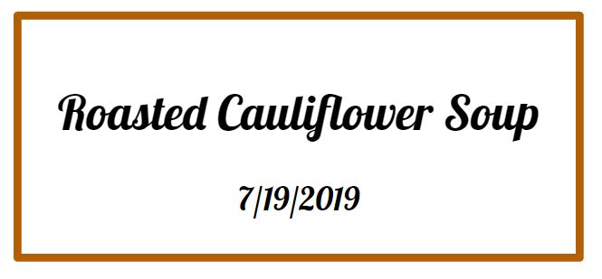

The roasted cauliflower soup yummy soup is the perfect addition to any vegan meal!
INGREDIENTS
Two heads of cauliflower, broken into florets.Show nutrition information Hide nutrition information
1/4 cup olive oil.Show nutrition information Hide nutrition information
One large onion, chopped.Show nutrition information Hide nutrition information
Four cloves of garlic, chopped.Show nutrition information Hide nutrition information
Six cups of waterSalt and black pepper to taste.
PROCEDURE
First, place the cauliflower florets into a large bowl of lightly salted water; allow them to stand for 20 minutes. Drain them well and arrange them on a sheet of heavy aluminum foil on a baking sheet. Pour olive oil evenly on the cauliflower.
Preheat the oven's broiler and set the oven rack about 6 inches from the heat source.
Broil the cauliflower until browned for 20 to 30 minutes.
Meanwhile, heat the olive oil in a large soup pot and cook the onion until it's translucent (for about 5 minutes). Stir in the garlic and roasted cauliflower. Pour in the water, season it with salt and black pepper, and let it simmer until all the vegetables are tender for about 30 minutes. Blend the soup in the pot with an immersion hand blender until it's creamy and smooth.
ENJOY!
RECIPE INFORMATION
Preparation Information
Prep Time: 15 minutes
Cook time: 1 hour
Ready in: 1 hour 35 minutes
Servings per recipe: 6
Nutrition Facts for 1 Serving
Calories: 140
Protein: 4.2 g
Fat: 9.2 g
Calcium: 59 mg
Iron: 1 mg
Vitamin A: 26 IU
Vitamin B12: 0
Vitamin C: 91 mg
Vitamin D: 0 IU
Vitamin K: 54.4 mcg


COMMENTS SECTION